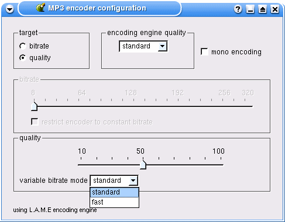

User Interface Guidelines
The following screen is a suggestion for a user interface if you wish to include
LAME in your program:

You should try to provide a user interface as simple as possible, avoiding
too many options.
- "target" bitrate/quality allows choice betwen VBR or CBR/ABR.
According to selection, CBR/ABR or VBR options should be grayed out.
- "encoding engine quality" allows 3 choices: fast, standard or
high. This option is not mandatory.
- a checkbox allows to encode in mono (LAME will downsample). There is no
choice between different stereo modes, as the default mode should be optimal.
Other modes are likely to decrease quality.
- CBR/ABR: a slider allows bitrate selection. LAME will use CBR only if the
specific checkbox is selected. Default mode when targetting a specific bitrate
whould be ABR, as it provides better quality than CBR.
- VBR: a slider allows quality selection between 10 and 100. This slider is
specifically aligned with the CBR/ABR one in order to give a visual indication
of the resulting bitrate of the different VBR quality levels.
A menu is allowing choice between the two VBR modes of LAME 3.x.
- A small note is indicating that the encoder used is LAME (as required by
the LGPL license). If the name "LAME" is problematic by itself,
something similar to "encoding technology by Mp3Dev.org" could also
be suitable, although specifically mentionning LAME is prefered.
In most cases, there should be no need to provide other options. The ones offered
in this example screen should already provide optimal results in the vast majority
of situations.
Back to LAME index page